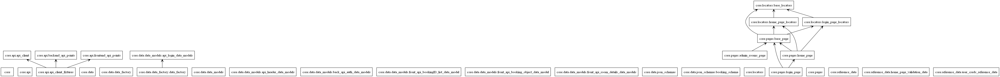

Class relationships
Table of Contents
api client function relationships
1.. include:: api_client_function_relationships.rst
classes_ta_framework_ui_api.png

packages_ta_framework_ui_api.png
packages_core.png

Table of Contents
1.. include:: api_client_function_relationships.rst